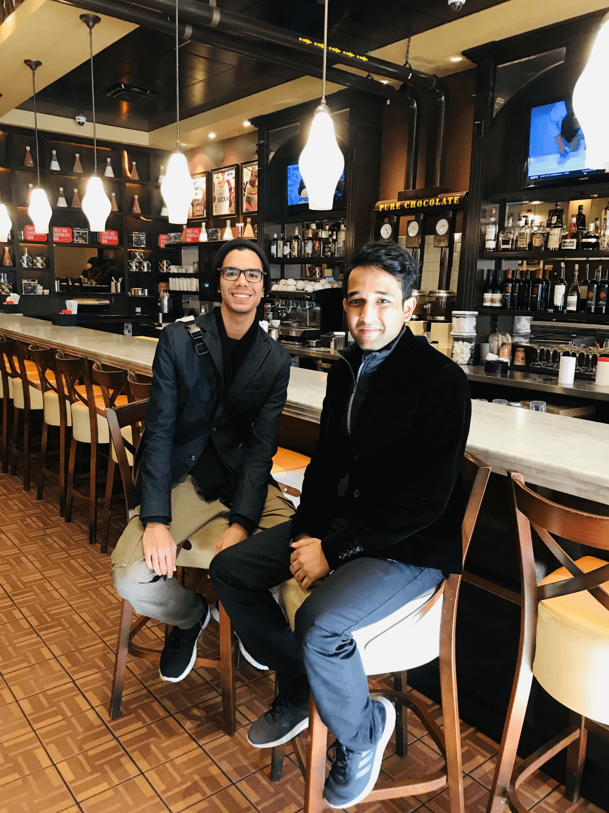

This is a story based on true incidence about a journey of three engineering students from Vellore Institute of Technology, India in the world's biggest engineering challenges hosted by Microsoft named by the Microsoft Imagine Cup.
Imagine Cup is an annual competition sponsored and hosted by Microsoft Corp. which brings together student developer worldwide to help resolve some of the world's toughest challenges. It is considered as "Olympics of Technology" by computer science and engineering and is considered one of the top competitions and awards related to technology and software design. All Imagine Cup competitors create projects that address the Imagine Cup theme:
Each person from a different background and culture. One is a passionate designer (Ansh Mehra), second is a hardcore researcher by heart (Hemant H Kumar) and finally it’s me (Saransh Mittal) with a brain that is full of unexpected brilliant ideas with a vision to innovate solutions that has a huge social impact and has the potential to solve real-world problems. Every day during the journey had made us learn something new and valuable.
We amongst the 28000 students applied for the Microsoft Imagine Cup 2019 in more than 20 countries from the Asian region. Results were declared and the top 12 teams were given a chance to showcase their products in front of the world. We were given once in a lifetime opportunity to represent India at the Asian championship.
I was a part of the technical community at my University started by various exceptionally hardworking students working as Microsoft Student Partners for Microsoft. I was introduced to the Imagine Cup by one of my seniors on the day I was recruited in the community during the orientation. Even though I was well aware of the competition even before visiting the Harvard University, I had always underestimated my critical thinking and ability skills and always thought that I was not capable enough to take part at the world championship. I will prove myself wrong in the future after the judgment day of the Imagine Cup Indian finals.

It all started back in October 2018 when we went to Harvard University to compete at HackHarvard 2018. We had developed a prototype of the application at the hackathon and pitched it to a lot of people. Fortunately, Susan Ibach, one of the members of the Imagine Cup team who handles the Microsoft Student Partner program by Microsoft liked our idea and saw potential in it to convert it into something big. She motivated us to further work upon the idea, improve further upon the prototype and submit a fresh proposal for Microsoft Imagine Cup 2019.
We gave our best shot at pitching of the idea in front of the judges but soon realized that our app was too basic to induce a real impact. Even though we didn’t win the hack at Boston we had faith that we had to improve a lot with the idea and the product. We had just made an app that could check if a food product contained a certain ingredient or not. We came back and started working on our mobile application. We brainstormed and tried to find a niche idea to our existing tech stack to solve the certain drawbacks in our product to solve the problem.
Consider a situation where Jack and his 7-year-old daughter Ellen are traveling to China. After a tiring day, they enter a supermart to buy something only to realize that all products have information written in Mandarin. Ellen had already been hospitalized twice because of her allergy to nuts. Spot accepts Ellen’s health profile and allows her father to choose products that suit his daughter’s health. Spot allows you to compare multiple products live in Augmented Reality. Just use your phone, tap on the products, select the filters recommended based on your health profile and see the filtered choices in Augmented Reality. Every year more than a million people get affected by allergic reactions like anaphylaxis — they consume foods that lead to harmful reactions and life-threatening medical emergencies. If a person chooses a filter that is harmful for his consumption, Spot will instantly warn him about his choices. This is because of the information gap between a product and it’s a consumer. Our aim is to eradicate this information gap. Majority of our day to day ordinary purchasing is done offline. Online grocery stores allow us to compare products in parallel, a feature unavailable to offline grocery shopping. We look forward to collaborating with companies and food markets to make their products AR-Ready. By making their products AR Ready, food manufacturers can give stronger incentives to customers to choose their products and increase their sales.
It’s simple but highly effective because it promotes choices that fit your health and works offline. We used Azure’s CustomVision AI to build an image recognition model. Using Python App Service, the database of products is hosted on Azure Cosmos DB. The boundaries between the real and virtual worlds are slowly dissolving and we aim to introduce a new dimension to the world of offline grocery shopping. This provides an advantage to both the consumer and the manufacturer. Being AR Ready can boost the sales of a product and bridging the information gap promotes the user to make healthier choices.
After sleepless nights working on the proposal and the submission video, the result day came. The video played a critical factor for the success of our application. It was late midnight when I was working for a startup based in Bangalore on their release of the product when my teammate Hemant called me on my phone and gave me the best news of my life.
Wow! I stood there, screamed with joy, closed my eyes and enjoyed the moment. We had done it. It had been a hard journey after HackHarvard 2018 but we had done it. We overcame the disappointment for traveling so far away from our country to the USA and not winning the HackHarvard. We never lost faith in my idea and continued. I immediately called up my parents late during the night to express my biggest happiness with them and to share the wonderful moment. This was the first time I felt super proud of myself to tell them about the Imagine Cup 2019.
Next day we received an email immediately from Microsoft congratulating us for our exceptional performance at the competition. They had sent us the guidelines we had to follow before confirming our participation for the Asian regional finals in Sydney, Australia. We started preparing for the tour to Australia as the championship was hardly a month away. They started processing our application to get our visa approved for the entry into the Australian borders.
For the next few weeks, we constantly stayed in touch with Microsoft. We had interviews with the media and the outreach team to share our views about our journey, conference meetings with the developer advocates at Microsoft, sessions with engineers at the Microsoft India team to help us with our business model and other experts from Microsoft who were there to mentor us briefing about our journey in the future.
We had won the Microsoft Imagine Cup India Nationals and now we had to represent India in the Asian regional finals. We were waiting for this day eagerly for a long time. All the finance including the flight tickets for our international journey along with our stay at the Novotel hotel near the Darling harbor was sponsored by Microsoft. We did not pay a single penny from our pocket.
Getting selected was one of the biggest achievements we could have thought off. Out of hundreds of teams from 17 countries that submitted projects for the chance to compete in the Asia Regional Finals, our team was one of 12 that were selected to advance. Microsoft was going to fly our team to Sydney, Australia from February 10–14 to compete for over USD20,000 in prizes, plus a shot at a spot in 2019 Imagine Cup World Championship in May.
This was truly a once in a lifetime opportunity for us to join a global community of student developers making an impact with technology and we were thrilled to see what other teams were about to bring to the Regional Finals.
We couldn’t contain our excitement. This was one of the biggest tech events on the planet and we were about to be a part of it but we’re not ready to yet compete with the other teams as a strong competitor. All the teams were either startups looking for investments for their idea to get a kick start or they were teams like us who had an idea with a vision to create a huge impact in the world. It was now the time to make sure that we do our best to making a full publishable product along with all the things we would need for our pitch at the Imagine Cup.
It is obvious that we would be needing a strong product implementation of our idea and a mind-blowing pitch plan to give a tough competition to other teams to create a strong impact. We realized that the people competing at the finals were startups so to create a brand out of our product we gave a little effort and tried something new we never had by including a little add-on to build a stronger impact.
We worked even harder to revamp our user interface of the application to make it, even more, user-intuitive with a lot of animations and tweaks. Pitches and posters are static means of communication to the people but a video trailer is what conveys a powerful message to people to help them understand better about your idea. We designed logos, posters, stickers and even T-shirts for our brand to look professional in front of the people we were to be introduced at the Microsoft Ignite.
We were extremely excited about the championship and were ready to leave for Sydney, Australia in the Asian regional finals. Just a week before when we were supposed to take off from Bangalore airport, I was coming back from my Soft Skills sessions in the morning when I dropped my iPhone accidentally on the pavement and the screen broke. I was sad because the screen broke and the competition was near with the whole application to be finished that was to be presented at the finals. By no means, I could have worked on the application because the AR development required the camera on my smartphone to work. Vellore is a semi urban city in India where we do not have enough facilities to get out smartphones repaired by any authorized or skilled person.
Things were not going fine for me. I was very conscious with my immunity and health. For the past month, the health wasn’t in a good condition. I was on medication for a while for my skin immune system when suddenly my health started to deteriorate and I was diagnosed with diarrhea for eating rotten food and suffered from food poisoning. The championship was near and was unsure if I would be able to get well by the time we had to leave for the journey. I was hospitalized immediately as the disease was spreading enormously and was uncontrollable. The doctor prescribed me some medicines that helped recover at a fast pace but it took almost a week to get cured completely.
The day came, we got over with our daily engineering classes and took a cab from Vellore. As we were leaving our college our friends came to drop us and wished best of luck for the journey. A month passed by quickly and we never realized. Soon the wait came to an end and we stepped closer to meeting wonderful people from around the globe. We reached Bangalore — the cyber city of India and was super tired after a long ride and reached Hemant’s house. It was late in the night but still, Hemant’s family greeted us and had prepared dinner for me and Ansh. We dozed off to sleep after the dinner as we had a lot of work pending for the next day. The sun rose and the morning grew. We had planned to spend the whole day at Hemant’s house to work on the product and the business model, buy new grocery items and test our application on the new food items that we bought from the local mart. Ansh dad was coming from Delhi to meet him and hand him over his passport so he left with him to stay for the night. Hemant and I worked tirelessly throughout the night to finish up the application’s frontend and backend. Soon the long night ended and we left for the airport early morning. We met Ansh at the airport but soon as we entered the airport the staff of the Malaysian airlines recognized us from our travel bookings and helped us with the check-in procedure. We were extremely shocked as to how the airline staff came to know about us as the finalists of the Imagine Cup. Suddenly we realized that Microsoft would have informed them about our arrival already. The staff told us the other team from the Bangalore region had also reached the airport and were done with the check-in procedure as they were was traveling with us from the same airplane. A feeling of competitiveness grew amongst us even before meeting them and we decided that we will observe their every movement and interact as little as possible to get to know the most about their product.
We had the first leg of our journey from Bangalore with Malaysian Airlines and our flight was supposed to land in Kuala Lumpur, Malaysia. After a 6 hours stopover at the malaysian airport, we boarded a connecting flight to Australia. It was night according to Malaysian time zone. Our flight took of from the runway. The night on the plane was full of excitement because I was going to meet wonderful people from around the world. A step is closer to a dream of competing at the international level.
Our flight flew above Australia and I saw nothing but barren land for the most part of the journey above the middle of the country. Australia being an island nation has a population of around 23 million people and most of them live across the major cities of the country. Soon we landed at the Sydney airport and were thrilled to see the marvelous beauty of the island nation. The airport was constructed next to the sea and the runway was parallel to it. Sydney is a lush green city with the beautiful architecture of building spanning the city. It was winter season back in India but experiencing the bright hot sun, energy started flowing through our body and rejuvenated us with excitement. Australia is located in the southern hemisphere of the globe and has an opposite climatic season of what is in the northern hemisphere. The country has a rich diverse heritage with people from all parts of the world. This was the first country where I experienced to see a lot of people from Asian countries be it China, South Korea, Thailand, etc.
We left the airport and a guide from Microsoft was waiting outside for all the teams and MSPs who were scheduled to arrive at the same time by the travel agency handling logistics for the journey — The tangerine travels. A bus was waiting at the arrival gate that took us to our destination — The Novotel hotel. We were accompanied by other finalist teams and MSPs from other counties. Soon we reached the hotel and were greeted by Pablo and Joan. They were waiting for us at the entrance of the building to guide us to our respective rooms. We finished up with the registration process and Pablo gave our respective Imagine Cup participation tag along with a gift card to spend on the food outlets which could be used in the food court in the mall next to the hotel. The hotel suites were not yet ready so we left out luggage at the hotel and left the place to explore the surrounding city.
Our hotel was next to the Pacific ocean with all the famous banking firms in Australia having their headquarters offices in the buildings next to the harbor. Almost all the tourist spots were close by the Darling Harbour. Ansh and I were given the same room to share but Hemant had a different room to share with a participant from the Sri Lankan team. We decided to spend the day together in our room and then go back to the respective rooms during the night to sleep.
It was later in the evening, we left the 4 walls of the room to witness the seaside beauty. We booked a cruise that would tour us to various places around the city next to the sea and left for the sunset view on the sail. For the next two hours, we were riding the waves and cruising around the shore of the city. We experienced the beauty of the Sydney Opera house and a lot of places. This was the first time during my life when I had boarded a ship. So obviously I was very excited about it! We clicked a massive number of photographs from different angles, poses and places around the cruise. The sunset happened and the ride ended. We returned to our respective room after the dinner, worked a bit and then dozed off to sleep until the next morning.
It was 8 am in the morning and the bus was waiting for us at the hotel entrance to take us to the Microsoft Reactor office in the city. Microsoft Reactor is an initiative by Microsoft to incubate startups and work closely with them to develop an innovative product. The second day began with the mock pitching session. Microsoft had planned a special boot camp session for us to teach us about how to build up a startup from a simple business model for your product and convert the simplest idea into the most innovative product.
They had invited all the Imagine Cup participants along with the Microsoft Student Partners at the entrepreneurship day. There were a lot of experts who flew from the Unites States to share their knowledge and experiences in their lives about creating a company out of an idea. For the whole day we were introduced to the new ways of creating a company and it’s business model and how to have a good pitch in front of the judges. After the sessions ended all the teams were called upon the stage to have a dry run of our product one by one. Many people belonging to various different non-English speaking countries found it extremely difficult to pitch their ideas to the judges. A lot of hard work and final touches were to be done by all the teams to improve their pitching strategies. Being from India we didn’t face the language barrier but the products developed by the other teams were extremely brilliant. We decided even though their product would have a larger impact audience than ours, we would pitch our product with the best we had got. After the pitching sessions got over we were divided into three groups of four teams to have a private consulting session with the experts who were called for the day.
We’re gearing up for an exciting 3 days and are thrilled to welcome the 50+ students who are joining us in Sydney for the #ImagineCup Asia Regional Final and #MSFTStudentPartner summit—follow the action here! pic.twitter.com/gIlZkGzPK4
— Microsoft Imagine Cup (@MSFTImagine) February 10, 2019
We were signed up with Mr. Tom Katona, one of the mentors at the tour who patiently listened to our idea with the business model and brainstormed to suggest us improvements to work on for the next day. Later in the evening, we all gathered together for a group photograph at the highest peak in Sydney and the day ended.
Some exciting technology being used by Team Alpha India and the other #ImagineCup participants to solve big challenges https://t.co/AijNaeVK2k
— Cecily Kovatch (@cecily_kovatch) February 12, 2019
We came back to our room to prepare for the final pitch. We were extremely tired after the hectic day and planned to meet after dinner to practice for the final presentation the next day.
The night flew away so quickly that we didn’t even realize about the hours we spent practicing the pitch and improving our ways to present our idea. For numorous times we changed the way Hemant and Ansh were going to present several times during the night and I would work on the product so that it would work without any issue when the people come to see our product. We made sure that we completely worked upon the suggested improvements by our mentors and went to sleep hoping for a better day tomorrow. The model we had trained to work on the food products was not giving us good results. We tried several techniques to create a good CNN model trying to the captured image of a product in every possible way so that our application could recognize the food packaging. It took us a huge effort to click hundreds of images again and again throughout the night to get our model good enough to pitch it to the judges.
The third day started with full of excitement as it was the judgment day and we had to pitch in front of the judges from different domains and industries. They were experts from all around the world and the best in their fields. We woke up early to practice the pitch and went to the ICC which was next to our hotel. We entered the venue to realize that the whole building was getting decorated for the Ignite conference by the volunteers working in Microsoft for the next day.
All the participants were practicing for the final pitch in-front before the championship was about to begin. We were amongst the few teams who reach the venue early. Though we were nervous but ready for the final show. We started to unpack our systems to test the product before the final moment. Hemant and Ansh were supposed to pitch our product in front of the experienced judges invited by Microsoft with the best of the passion we had. We had practised at-least a 100 times before the final run through working hard, improving our ways to pitch the product, preparing for the every possible QnAs by the people, changing the pitching script, training the deep learning model to recognise the packaging of the product and the ways to showcase the demo of the product before the final moment for which we had been waiting for a long time, traveling a massive distance far away from our home country, India.
This was the one moment and a dream for an engineering student waiting throughout his life to innovate and show the world about the deep passion to develop for the people that can create a huge impact in their life, solving complex and challenging problems to help the human generation live a better and a comfortable lifestyle.
The pitching session began with an awkward silence and the doors were shut. All the teams were ready with their product and the judges settled at their respective places. The whole auditorium was ready for the final moment, the lights were dimmed and the competition began. Cameras were turned towards the teams and we were divided amongst groups of four to pitch in front of the people. All the teams began to pitch one by one showcasing their greatest innovative ideas in front of the world.
Turn for the hardware projects came and Team RailinNova from China, Team Caeli from India, The Straw Hats from Sri Lanka and Team SUFECS from Malaysia were called up on the stage.
All the mentors and audience wished us best of luck before the final pitch and the moment came when Ansh and Hemant started with the pitch. Though we’re nervous, our pitch ended up after the longest 3 mins of our life. Those were the happiest and the proudest moments of my life. The pitching session ended and results were declared. Somebody from the media had told us earlier before the competition that one of the teams from India should be the one to win the global championship to bring home the Imagine Cup. Before the final ceremony to declare the winners. The session was stopped for a few moments for the judges to decide the winners. We came outside of the auditorium before the ceremony to meet the other teams and congratulate them for the achievement and wish them best of luck. We were lucky to share the world stage with such innovative minds from around the world. The break concluded and Influencers as special guests were invited on the podium to announce the winners.
Team Caeli from India had bagged the first position at the Asian championship. They had created a smart automated anti-pollution and drug delivery mask for Asthmatic and Chronic Respiratory Patients. Caeli implemented a breakthrough technology to improve the quality of life for respiratory patients living in the world’s most polluted cities of India and China.
Team RailinNova from the country of China was declared as the runner’s up as they created a technology to automate the process of railroad inspection by automatic positioning and identifying various defects through multi-sensor fusion to replace of the workers and create a safer method.
Team AidUSC from the Philippines won the third pole. They had developed a product named Aqua Check that utilizes Microsoft Azure’s Custom Vision to analyze the contamination level of a water sample by taking a photograph through a microscope to map the contaminant locations.
The competition ended with me taking some of the best experiences of my life with invaluable countless memories and the happiness of being a part of such a great community of innovative minds.
We exited the auditorium and Microsoft awarded us with the Certificates for being the finalists and winning the Indian finals. They distributed a specially planned Microsoft goodie bag containing T-shirts, pens and other stuff to every member present at the time. Before everybody was about to leave, some of the media reporters who had flown from Singapore to cover the event came to us for the final time and questioned my team about our further plans to expand the idea. Though we already decided before that once we reach India the first thing we will start is with the patent application to the copyright the product idea but recently the process is still in the documentation phase. Soon we left the International Convention Center building and reached the hotel enjoying the proud moment.
Later in the evening, it became dark outside. We were so tired that we never realized that we slept for so long. It was 9 PM in the night and we had missed our dinner. In Australia, most of the food outlets and restaurant get shut after 9. I called up Hemant and we left the hotel to hunt for food but after an unsuccessful try, we ended up ordering food from the room service.